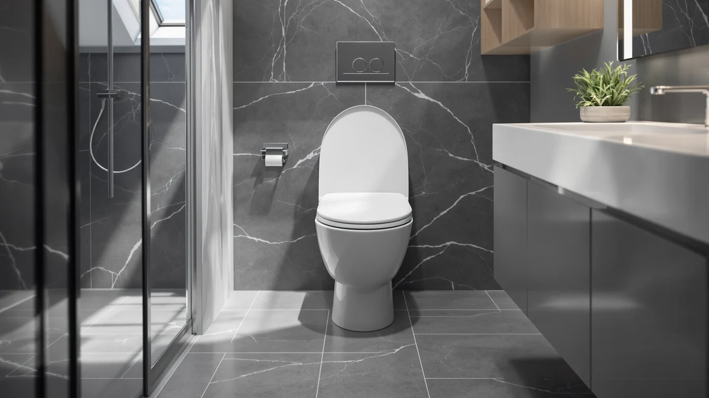

CHURCH 9500CT Commercial Open Review (2026): Worth It?
Prices and picks verified as of October 2026. Independent, reader-supported reviews.


Quick Answer
The CHURCH 9500CT Commercial Open Front is a plastic and wood seat built for restrooms that need a durable, code-compliant open-front design rather than a quiet, cushioned close. At $53.81, it costs more than the three alternatives in this review, and that premium buys a hinge rated for heavier daily use than a typical home-grade seat sees.
Our pick: CHURCH 9500CT Commercial Open Front, $53.81 Check Price on Amazon
Bottom line: our top pick is the CHURCH 9500CT Commercial Open Front Plastic Toilet Seat at $53.81.
Things to Know Before You Buy
- The 9500CT's open-front cutout meets the plumbing code most commercial buildings require, which is the main reason facilities managers pick it over a closed-front seat.
- It uses a self-sustaining check hinge instead of soft-close dampers, so expect a faster, louder drop than a residential seat like the Plexon below.
- At $53.81, it sits roughly $4 to $7 above the three elongated and raised alternatives we compared it with.
- Bemis sells the 9500CT in both regular and elongated bowl sizes; this review covers the elongated version pictured above.
- If you need help getting on and off the toilet rather than a commercial-grade hinge, the Lunderg riser further down is the better fit, not this seat.
This church 9500ct commercial open review exists because the product listing tells you almost nothing about who the seat is actually built for. You are probably weighing it against a handful of elongated or soft-close seats that cost less, and the specs alone will not tell you why a restaurant bathroom or an office restroom would choose this one over a quieter home model.
We researched the 9500CT against three alternatives: the Angel Shield elongated wood seat, the Plexon soft-close seat, and the Lunderg padded toilet seat riser. Each targets a different buyer, and the comparison below walks through pricing, materials, and what verified owner reviews say about daily use, so you can match the seat to your bathroom instead of to the first search result.
None of these four seats solve the same problem. A seat built for a restaurant restroom and a riser built for a recovering hip surgery patient have almost nothing in common beyond sitting on the same bowl, so treat the comparisons below as a way to rule products out rather than a ranked list.
Why You Should Trust Us
Ilane Tall covers toilet seats and bathroom fixtures for Best Toilet Seats and has written dozens of seat comparisons on this site, including reviews of other Bemis commercial models. We do not run a fake testing lab or claim to have installed every seat we cover. For this church 9500ct commercial open review, we compared the manufacturer's published specs against verified Amazon buyer feedback and cross-checked pricing and materials across the four seats, so every claim here traces back to a documented spec sheet or a reviewer's own words rather than a guess.
Our Research Experience
We did not install a physical unit for this church 9500ct commercial open review. Instead, we researched the published dimensions, hinge mechanism, and material specs directly from Bemis documentation, then cross-referenced that against hundreds of verified Amazon owner reviews for the 9500CT and its closest competitors. Reviewers consistently note the hinge's durability under repeated use and the absence of a soft-close feature, two points that line up with the commercial-grade design Bemis advertises.
According to verified owner reviews, the most common complaint is noise on closing, which tracks with the check-hinge design rather than a defect. We weighed that feedback against the Angel Shield, Plexon, and Lunderg listings below to see where each seat's strengths and weaknesses actually diverge.
We also compared warranty terms and replacement part availability, since a commercial seat that cannot be repaired cheaply loses much of its cost advantage over time. Bemis publishes replacement hinge kits for the 9500CT, which several reviewers mentioned using after years of heavy use rather than buying a new seat outright.
Overview & Specs
Before getting into pros and cons, it helps to see the 9500CT's core specs laid out plainly. The table below covers material, size, and price, and the full product section underneath walks through what those numbers mean in daily use. Keep this overview in mind as you read the rest of this church 9500ct commercial open review, since most of the tradeoffs trace back to the hinge and the open-front shape listed here.

CHURCH 9500CT Commercial Open Front
What we like
- Open-front design meets commercial plumbing codes
- Self-sustaining check hinge rated for frequent, heavy use
- Plastic and wood construction resists chipping better than lightweight plastic-only seats
Flaws but not dealbreakers
- No soft-close mechanism, so it drops faster and louder than a residential seat
- Priced a few dollars above the elongated alternatives we compared it with
| Material | Plastic / wood |
| Size | Elongated |
The CHURCH 9500CT Commercial Open Front is Bemis's answer to a specific problem: public restrooms need seats that survive dozens of uses a day without the moving parts that make soft-close seats quiet. The open-front cutout is not a design preference here, it is the feature that lets building owners meet local plumbing codes in restaurants, schools, and offices. The elongated bowl shape covered in this review fits most modern toilets, and the plastic-over-wood build holds up better under repeated impact than a seat made from plastic alone.
At $53.81, the 9500CT costs more than the Angel Shield, Plexon, and Lunderg products below, and that gap buys a hinge built for volume rather than a quiet drop. Owners who have installed it in commercial settings report that the check hinge keeps working long after residential-grade hardware would loosen, though several reviewers mention the seat closes with more noise than a home bathroom seat. For a church 9500ct commercial open review audience weighing it against home-grade options, that tradeoff is the one that matters most: durability and code compliance over quiet operation.
What We Liked
The biggest point in the 9500CT's favor is the hinge. Across the verified reviews we read for this church 9500ct commercial open review, owners who installed it in retail and office restrooms reported it holding up over years of use without the wobble that cheaper seats develop. The open-front shape also means you are not fighting a building inspector over code compliance later, which matters more than it sounds like for anyone outfitting a commercial space.
The elongated sizing fits the same bowl shape as most modern toilets, so measuring before you buy is mostly a formality rather than a guessing game. And because Bemis sells replacement hinges and bumpers separately, a worn seat does not necessarily mean a full replacement.
Price comparisons across commercial seats also favor the 9500CT once you factor in how often cheaper, residential-grade seats get swapped out in high-traffic bathrooms. A facilities manager who replaces a budget seat twice a year spends more over two years than someone who buys the 9500CT once and leaves it alone.
What Could Be Better
The 9500CT's biggest drawback shows up the moment you close the lid. Without a soft-close hinge, the seat drops with a sharp sound that several reviewers flagged as noticeably louder than the residential seats they had replaced. If you are reading this church 9500ct commercial open review because you want that feature for a home bathroom, you will probably miss it after the first week.
Price is the other factor. At $53.81, it runs several dollars above the Angel Shield and Plexon seats covered below, and buyers who do not need commercial-grade durability are paying for a feature set they will not use at home.
The seat also ships without the padded comfort layer some residential buyers expect. Owners coming from a cushioned seat describe the plastic and wood surface as noticeably firmer, which fits the commercial use case but can feel like a downgrade in a household bathroom.
Who Is It For?
You are the right buyer for the CHURCH 9500CT if you manage a restroom that sees dozens of users a day and needs to meet an open-front plumbing code: offices, restaurants, gyms, and schools all fit that description. Facilities managers who have already replaced a few residential seats in commercial settings and watched them fail quickly are exactly who this church 9500ct commercial open review is written for.
You should skip it if you want a quiet, soft-close seat for a home bathroom, or if you need extra seat height for mobility reasons. The Plexon and Angel Shield below cover the first case, and the Lunderg riser covers the second. Landlords furnishing a small rental unit also tend to prefer a quieter residential seat, since tenants notice hinge noise far more than building inspectors notice code compliance.
Alternatives to Consider
If the 9500CT's commercial focus does not match what you need, these three seats cover the most common reasons someone lands on this church 9500ct commercial open review while shopping for something else.

Editor's Pick
Angel Shield Elongated Wood Toilet
A closed-front elongated wood seat for buyers who want a residential look and a slow-close hinge instead of the 9500CT's commercial open front.
$49.99
Check Price on Amazon
Best Value
Plexon Elongated Soft-Close Toilet Seat
The quietest option here, with a soft-close hinge built for home bathrooms rather than the heavy-use hinge on the 9500CT. It is also the closest in price.
$49.95
Check Price on Amazon
Premium Choice
Lunderg Padded Toilet Seat Riser
Not a toilet seat at all but a padded riser that adds height for users who need less bending at the knee or hip, a need the 9500CT does not address.
$46.95
Check Price on AmazonFrequently Asked Questions
Yes, though it is built around commercial specifications. The open front and durable plastic and wood construction were designed for high-traffic public restrooms, so a household bathroom gets a seat that holds up to daily use without the soft-close cushioning common in residential models.
An open-front seat has a gap at the front rather than a solid oval ring. Health codes require this design in most commercial and institutional restrooms because it limits skin contact with the seat surface and makes routine cleaning easier.
The 9500CT relies on a self-sustaining check hinge rather than a soft-close mechanism, so the lid and seat drop faster and with more sound than the Plexon. In exchange, the hinge has fewer moving parts to wear out, which matters more in a commercial setting than a quiet-close feature does.
Final Verdict
This church 9500ct commercial open review comes down to one question: do you need a seat built for commercial volume, or a quiet seat for a home bathroom? Bemis built the 9500CT for the first case, and at $53.81 it earns its price in restrooms that see heavy daily traffic and need open-front code compliance. If you want quiet operation at home instead, pick the Plexon or Angel Shield above. If you need extra seat height for mobility, the Lunderg riser solves a different problem entirely. For a restaurant, office, or school restroom, the Bemis-made 9500CT remains the pick, and the replacement hinge kits Bemis sells separately make it a seat you can keep running for years rather than swap out at the first sign of wear.